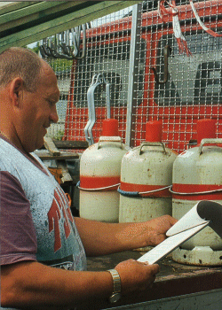

Kleinmengenregelung
Grundsätzlich ist beim Transport von Gefahrgütern zwischen Beförderungen im Rahmen der Haupttätigkeit und Versorgungstransporten zu unterscheiden.
Kleinmengenregeln für Beförderungen im Rahmen der Haupttätigkeit
Gefahrguttransporte kleiner Mengen, die Unternehmen im Rahmen ihrer Haupttätigkeit, z.B. im Werkstattwagen) durchführen, sind von den Vorschriften des ADR weitgehend freigestellt, wenn
- die höchstzulässigen Mengen, die in der Gefahrgutliste dargestellt sind, und 450 Liter je Verpackung nicht überschritten werden,
- die Beförderung nicht für die interne oder externe Versorgung durchgeführt wird,
- durch geeignete Maßnahmen das Freiwerden gefährlichen Guts unter normalen Beförderungsbedingungen verhindert ist.
Bei dieser weitgehenden Freistellung vom ADR sind folgende Vorschriften zu beachten:
- Bei Unfällen oder Unregelmäßigkeiten, bei denen es zu einer Gefährdung durch das Gefahrgut kommt, hat der Fahrzeugführer die nächstgelegene zuständige Behörde (z.B. Polizei) unverzüglich zu benachrichtigen.
- Der Umgang mit Feuer und offenem Licht ist bei Ladearbeiten in der Nähe von Versandstücken und haltenden Fahrzeugen sowie in den Fahrzeugen untersagt.
- Die Ladung ist so zu sichern, dass sich die Lage zueinander und zum Fahrzeug nur geringfügig verändern kann.
Mit dieser Regel können einzelne Farbdosen und Druckgaspackungen (Spraydosen) befördert werden, die keine aufgedruckte Kennzeichnung als Gefahrgut haben. Es ist allerdings sicherzustellen, dass beim Transport kein Gefahrgut freigesetzt werden kann. Dazu müssen die Dosen aufrecht in einen Schutzkarton gestellt, die Hohlräume ausgefüllt und der Karton geschlossen werden.
Kleinmengenregeln für Versorgungstransporte
Bei Gefahrguttransporten kleiner Mengen mit einem Fahrzeug, die zur Versorgung mehrerer Baustellen oder des Materiallagers oder Bauhofes und mit Behältern über 450 l Inhalt durchgeführt werden, sind zusätzlich noch folgende Vorschriften zu beachten:
- Die Verwendung bauartgeprüfter Verpackungen ist vorgeschrieben.
- Die zutreffenden Gefahrzettel und die Kennzeichnungen mit UN-Nummern müssen auf den Verpackungen angebracht sein.
- Feuerlöscher der Brandklassen ABC (z.B. 2 kg Pulver) zum Löschen eines Motorbrandes oder des Fahrerhauses sind mitzuführen. Feuerlöscher müssen EN 3 entsprechen und alle 2 Jahre überprüft werden. Sie sind leicht erreichbar für die Fahrzeugbesatzung anzubringen.
- Einsatz geschlossener Fahrzeuge für die Beförderung von Gasen (z.B. Flüssiggas, Sauerstoff, Stickstoff, Kohlendioxid) mit Belüftungseinrichtungen. Nur in Ausnahmefällen mit der Warnaufschrift "ACHTUNG KEINE BELÜFTUNG, VORSICHTIG ÖFFNEN" an den Ladetüren.
- Das Betreten eines Fahrzeugs mit Beleuchtungsgeräten mit offener Flamme ist untersagt. Außerdem dürfen die verwendeten Beleuchtungsgeräte keine Oberfläche aus Metall haben, durch die Funken erzeugt werden könnten.
- Das Öffnen eines Versandstücks mit gefährlichen Gütern durch den Fahrzeugführer oder Beifahrer ist verboten.
| Weitgehende Freistellung von den Bestimmungen des ADR |
"Kleine Mengen", befördert in Verbindung mit der Haupttätigkeit des Unternehmens oder in Zusammenhang mit
Wartungs- und Reparaturarbeiten – bis 450 l/Versandstück
(z.B. Werkstattwagen, Baggerfahrer mit 200-l-Dieselfass zum Nachtanken, Dachdecker mit Gasflaschen) |
Gase in besonderen Einrichtungen, die für den Betrieb dieser Einrichtungen erforderlich sind
(z.B. Flüssiggasbehälter auf Gussasphalt-Mischgeräten) |
Flüssige Kraftstoffe in
- Kfz-Tanks bis 1500 l, bei Anhängern bis 500 l
- tragbaren Behältern bis 60 l
- Behältern von als Ladung beförderten Fahrzeugen (z.B. auf Tiefladern)
|
| Durch Sondervorschriften freigestellte Gefahrgüter (z.B. Asbest, Batterien, Gussasphalt) |
| Ungereinigte leere Verpackungen, die Güter der Klassen 2, 3, 4.1, 5.1, 6.1, 8, 9 enthielten, wenn keine Gefahren
vom Gut ausgehen können. (z.B. leere Gasflaschen, leere Benzinkanister usw.) |
| Eingeschränkte Freistellung von Bestimmungen des ADR |
| "Kleine Mengen", befördert zur internen oder externen Versorgung und über 450 l/Versandstück |